ICT 9/10 Unit 3: HTML, CSS and Web Design Exam (/50)
This is a CLOSED EVERYTHING test. NO: talking or communicating with other students. No Phones, headphones, or other electronic devices.
You may ONLY have ONE web browser window open, with one tab,to this exam page. No other software or websites .. UNLESS your second language is English, then you may also have Google Translate open in another tab.
There are 50 multiple choice questions to be completed on a scantron sheet in pencil.
Note: "valid HTML" means HTML5 code that would pass the w3 validator against HTML5 specifications.
Note: "valid CSS" means CSS code the would pass the w3 validator against CSS 3.0
Web Design Questions
- This allows you to get more information about something by clicking on it.
- Underline
- Hypertext
- Favicon
- CSS
-
Which program do you need to write HTML and CSS?
- Any graphics program.
- Any web browser.
- Any text editor.
- It can only be Notepad++.
- The organization responsible for setting standards for languages such as HTML and CSS is:
- Mozilla
- Microsoft
- BornCG
- W3C
- A *Metaphor* commonly used to make the Internet seem more alluring, familiar and relatable during the 1990's was...
- Outer Space Exploration
- The Ocean
- City Streets
- Family Trees
- Your class website project is not yet publically viewable on the Internet, because it is not on... __________
- a Hyperdrive
- a Domain Name Server
- Google Drive
- an ISP Router
- a Web Server
-
This font belongs to which family?
- serif
- sans-serif
- sans
- truetype
-
This font belongs to which family?
- serif
- sans-serif
- sans
- truetype
-
There is a website on the Internet which lists all proper HTML tags, how to use them, which web browsers support them, attributes each allows, and more.
- TRUE
- FALSE
HTML & CSS Questions
-
HTML is short for:
- HTTP Matrix Language
- Hypo Text Method Language
- Hypertext Technical Method Library
- Hypertext Markup Language
-
TRUE or FALSE:
HTML5 is, strictly speaking, a programming language.
- true
- false
-
A Web Browser ___________ a .html web page file.
- parses
- compiles
- compresses
- concatenates
-
Some HTML tags, like <img>, inherently need more information so that they can do their job, so you need add _________ inside the tag...
- CSS
- Parameters
- Attributes
- Arguments
-
Tags and text that do not show directly on the page (in the browser viewport) are placed where ?
- Grid
- Head
- Body
- Footer
- none of the above
-
If you include several empty lines...
in the <body> section of a web page's HTML code, the page will display in a web browser with a matching section of empty lines with no elements. (note: "empty lines" in code means no visible characters: no text or code or tags. Press 'Enter' twice or more while coding to make an 'empty line' in Notepad++).
- true
- false
-
When adding an <img> to your web page, you should point its source to ...
- An absolute URL, because you can't be sure if an address of an image will change.
- An absolute URL, because you want to tell the web page file where, based on its own location, the image file is.
- An relative path, because you can't be sure if an address of an image will change, AND because you want to tell the web page file where, based on its own location, the image file is.
-
What is the correct way to close the tag
<div id="foo"> tag?
</div></div id="foo"></foo><div>
- Only one of the following lines of code will NOT validate as HTML5. Which line is it?
<hr><il>Horse<h6>Dog</h6><div>Pig</div><div id="foo">foo</div>
-
What is a valid HTML5 tag for a line break?
<br></br>
<br>
<break>
</br>
-
What HTML5 code is valid?
<p><strong><em>A short paragraph.</em></strong></p>
<strong><em><p>A short paragraph.</p></em></strong>
<p> <strong><em>A short paragraph.</strong></em></p>
- none of the above
-
In modern web design, with which language should you control the width of an HTML element?
- CSS
- HTML
- C#
- Javascript
- In the following image, what (as a whole) is circled?
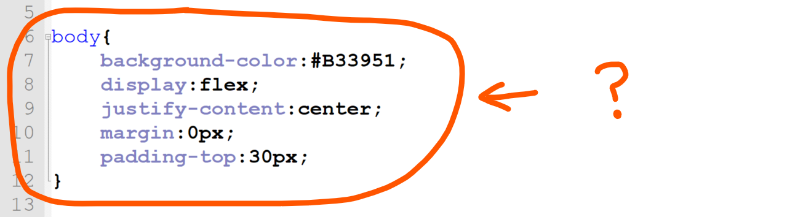
- A Declaration
- A Rule
- Syntax
- A Selector
- What does this:
color:#FFFFFF; do?
- Sets text to WHITE
- Sets text to BLACK
- Sets the background colour to WHITE.
- Sets the background colour to BLACK.
- Which is preferred?
-
font-family:Comic Sans MS;
-
font-family:'Comic Sans MS';
This color code: #0000FF represents which color?
- red
- green
- blue
- yellow
In the following image, the line of code pointed at could be described as...
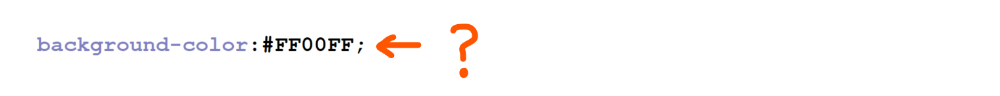
- A rule with the declaration 'Aqua'
- A tag with the property 'Aqua'
- An Argument with the property 'Magenta'
- A declaration with the value 'Magenta'
To "label" a location at the bottom of a web page (ie. to make a "local anchor") you would use which of the following tags:
<h3 href="bottom"></h3>
<h3 id="bottom"></h3>
<h3 href="#bottom"></h3>
<h3 id="#bottom"></h3>
To scroll a webpage to the bottom of the page from a text link Jump to end, you would use which of the following tags:
<a href="bottom">Jump to end</a>
<a href="#bottom">Jump to end</a>
<a href="http://#bottom">Jump to end</a>
<a href="goto:bottom">Jump to end</a>
In order for the following link to work, the file page1.html must be saved in a different folder than the .html file containing the link.
<a href="page1.html">Page 1</a>
- True
- False
What does the tag <hr> do?
- aligns a header to the right hand side of a page
- creates a home room list
- creates a header row in a table
- draws a horizontal line on the page
Which tag produces the largest heading?
<h1>
<h4>
<h6>
<h10>
Which of the following image tags is considered valid HTML5?
<img src="horse.jpg" alt="Seabiscuit">
<img scr="horse.jpg" alt="Seabiscuit">
<image src="horse.jpg" alt="Seabiscuit" ></image>
<img src="horse.jpg">
What special code displays the copyright symbol © (a c enclosed in a circle) in HTML?
©right;
©
©
<copy>
(c)
Why should you add alternative text to your images?
- It makes your image accessible to people who have impaired vision.
- It allows for improved SEO (search engine optimization)
- To select an alternative image to display.
- So the user can save the image using the 'alt' text as a file name
- Both A and B
Which tag controls the text in the tab at the top of the browser window?
-
<head>
-
<title>
-
<h1>
-
<top>
What does CSS stand for?
- Colorful Style Sheets
- Computer Style Sheets
- Cascading Style Sheets
- Creative Style Sheets
Where in an HTML document is the correct place to refer to an external style sheet?
- At the very end of the document
- At the very top of the document
- In the
<body> section
- In the
<head> section
Which of the following is valid HTML5 for including an external style sheet?
<link rel="stylesheet" type="text/css" href="styles.css"> -
<import src="styles.css">
-
<style src="styles.css" type="text/css"></style>
-
<a href="styles.css">Style Sheet</a>
Which of the following CSS would change the background color of all the links in a webpage to green?
link {background-color:#00FF00;}
#a {background-color:green;}
.link {background-color:#00FF00;}
a {background-color:green;}
The pseudo-class that can be used in CSS to change the appearance
of elements the user has their mouse cursor over is:
focus hover active cover
In CSS, how do you add a background color to an element with the id red without affecting
any other elements?
-
#red {background-color:#FF0000;}
-
.red {background-color:#FF0000;}
-
red {background-color:#FF0000;}
-
:red {background-color:#FF0000;}
Which of the following CSS properties changes the size of text?
font-size:
size:
text-size:
size-text:
Which CSS property removes the underline from a default anchor?
remove-style: text-decoration: font-modifier: text-style:
Which of the following CSS examples will NOT validate?
-
font-family:Verdana;
-
border:20px solid red;
-
background-image:('smiley.gif');
-
position:absolute;
In regards to the styling <div> elements, where is the CSS padding property located?
- Inside the border
- Outside the border
- It could be inside or outside the border, depending on where you place it in your code.
- Inside tall DIVs
Consider the following VALID HTML for the next three questions
<body>
<div id="main">
This is main.
<div id="foo">
This is foo.
</div>
</div>
</body>
This HTML, with CSS applied, produces the following page. Note: main is a 700x700 pixel box and foo is a 200x200 pixel box.
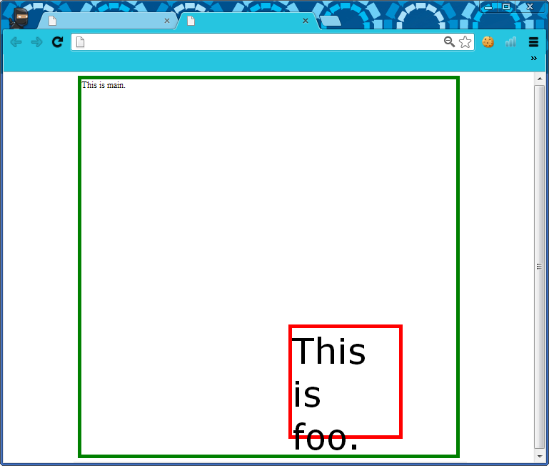
What CSS might you use to make ONLY the red square into a circle?
-
div{ border-radius: 50% 50% 50% 50%; }
-
div{ radius: 100px 100px; }
-
#foo{ border-radius: 100px; }
-
#foo{ corner-radius: 50%; }
Which of the following CSS was most likely applied to a CSS '#foo' rule to position it as shown in the image above, in main?
-
position:absolute;
bottom:30px;
right:100px;
-
margin-bottom:30px;
margin-right:100px;
-
display:flex;
justify-content:100px;
align-items:30px;
-
float:right;
padding-right:100px;
bottom:30px;
Which of the following CSS was most likely applied in #foo to format the text "This is foo"?
-
font-size:5pt;
font-family:'Times',sans-serif;
-
font-size:300pt;
font-family:'Arial',serif;
-
font-size:50pt;
font-family:'Verdana',sans-serif;
-
font-size:50pt;
font-family:'Mistral',cursive;
Which code is used to style the following element?:
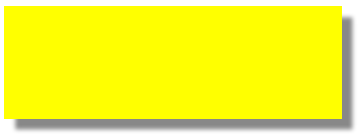
- 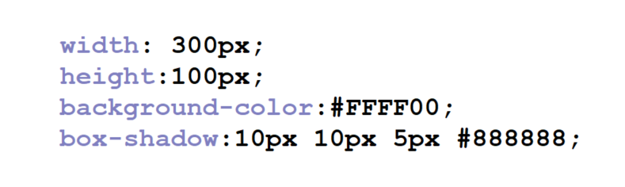
- 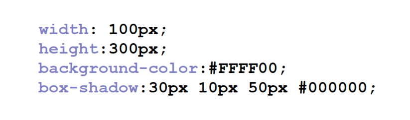
- 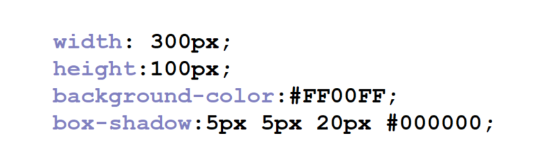
The following image contains valid html code. How could you style ONLY all of the words 'grass', 'peas', and 'apples' with the color GREEN?
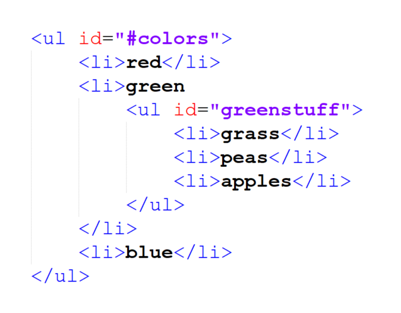
ul > ul{ color:#00FF00; }!#colors { color:#00FF00; }#greenstuff > li{ color:green; }#greenstuff{ color:#00FF00; }- Both answers C and D work.
Examine this image (figure 1):
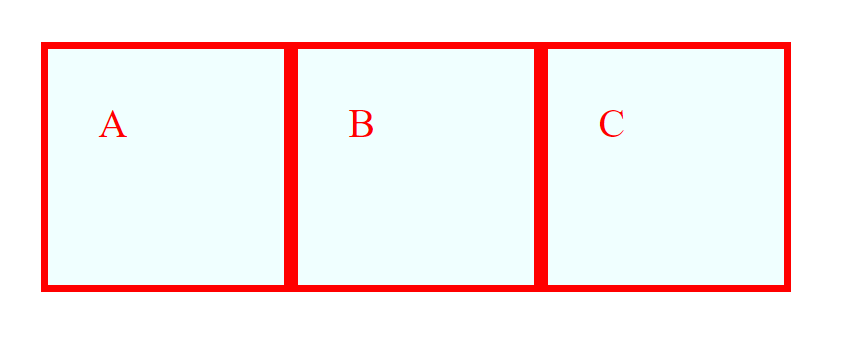
The above web page element was created, in part, using this HTML (figure 2):
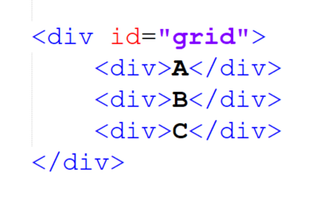
and this CSS (figure 3):
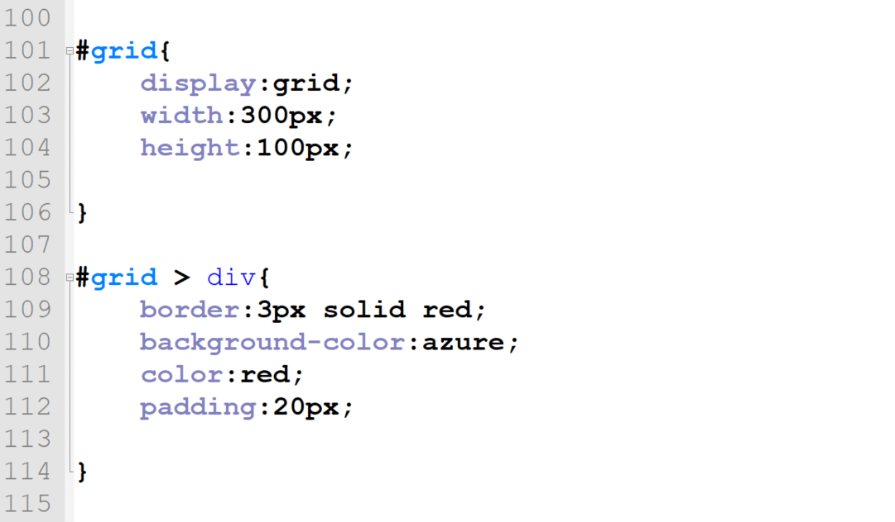
Which 1 line of code must be added to the CSS file (in figure 3) to complete the grid layout as shown above (in figure 1)?:
- On line 105:
grid-column: 3;
- On line 105:
grid-template-rows:33% 33% 33%;
- On line 105:
grid-template-columns:1fr 1fr 1fr;
- On line 113:
grid-column:1fr;
- On line 113:
grid:auto;
You are done!
- Make sure your name is on your ScanTron sheet.
- Hand in your ScanTron FACE DOWN to the bin at the front.
- Close this page, and *Silently* work on your website project.